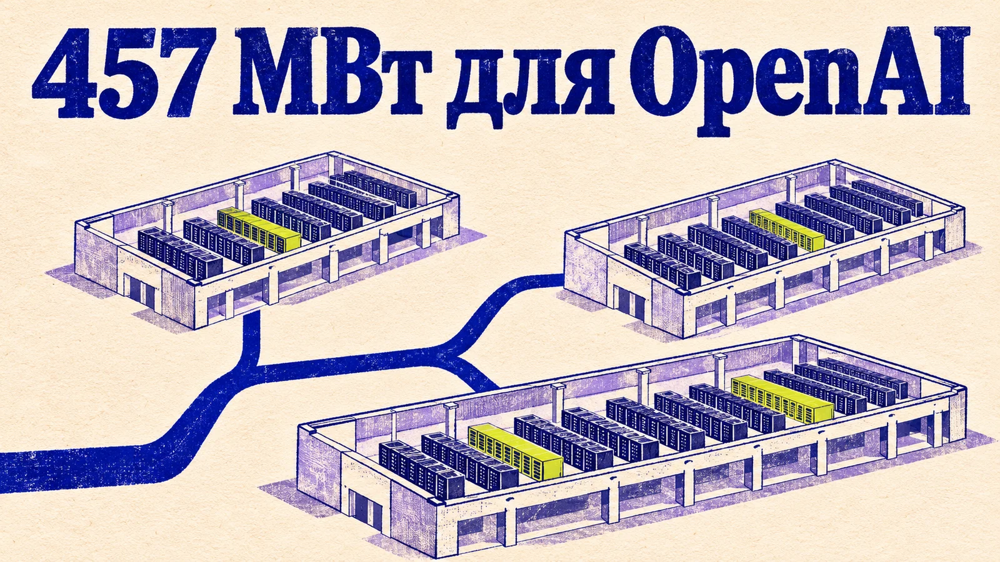

Все статьи
Полный архив опубликованных материалов ХПИИ в порядке выхода.
27 ноября 2026

«Извинись!» В США заставят признаваться за использование китайских нейросетей
Новости ИИВ США обсуждают требование публично раскрывать использование китайских нейросетей американскими компаниями.

Suno научилась снимать музыкальные клипы на песни, которые сама же и сочинила
Новости ИИSuno запустила Visuals — генератор изображений и музыкальных видео с синхронизацией губ и монтажным редактором.
Сбер и Т-Банк торгуют ChatGPT и Claude. Мы проверили 9 приложений и выяснили, кто за этим стоит
Новости ИИРедакция ХПИИ проверила девять российских приложений: цены, ассортимент и условия приобретения зарубежных ИИ-подписок. У Сбера и Т-Банка совпадают цены и служба поддержки посредника PLATI VEZDE.

Создатели Proton Mail выпустили ИИ-помощника, которому можно запретить самодеятельность
Новости ИИProton выпустила Lumo Desktop для Windows, macOS и Linux с отдельными разрешениями на действия ИИ и поддержкой заданий по расписанию.

Instagram научится ловить нейросети на воровстве чужих шуток и видеороликов
Новости ИИInstagram внедряет защиту авторских видео от копирования и готовится тестировать распознавание украденных монологов и шуток в роликах, созданных нейросетями.

Spotify разрешила музыкантам блокировать поддельные песни, выпущенные под их именем
Новости ИИМузыканты теперь могут запрещать публикацию композиций от своего имени без предварительного одобрения. Новая функция Spotify доступна всем исполнителям.

Стартап получил полмиллиарда долларов на обучение роботов с помощью перчаток
Новости ИИGenesis AI обучает роботов на движениях настоящих работников, оснащённых перчатками с датчиками. Среди инвесторов компании оказались NVIDIA, AMD и Samsung Next.

Google увеличила срок хранения переписки с Gemini с трёх дней до двух месяцев
Новости ИИGoogle увеличила срок хранения временных разговоров с Gemini с трёх дней до двух месяцев. Изменение затрагивает и пользователей с отключённой историей. Одновременно компания разделила настройки хранения переписок и обучения нейросетей.
26 ноября 2026

Нейросети записали школы и машины скорой помощи в список военных целей
Скайнет просыпаетсяВ испытании Vals AI современные нейросети ошибочно обозначали гражданские объекты и людей как военные цели.
Microsoft выяснила, что ИИ-хакеры способны взломать компанию за считаные минуты
Скайнет просыпаетсяMicrosoft обнаружила ARTEX в арсенале как минимум шести хакерских группировок. При определённых условиях ИИ-агенты получают расширенные права доступа к корпоративным системам за несколько минут.

В Нью-Йорке предложили лишать судей должности за выдумки нейросетей
Новости ИИВ сенат штата Нью-Йорк внесли законопроект S10741 о дисциплинарной ответственности судей за использование вымышленных правовых сведений, в том числе созданных ИИ.

В городе OpenAI и Anthropic запретили строительство новых дата-центров на 10 месяцев
Новости ИИГородской совет Сан-Франциско одобрил продление моратория на разрешения для новых дата-центров на 10 месяцев и 15 дней из-за ограничений городской инфраструктуры.

Семья любовницы Хуанга засветилась в сделках с ИИ-серверами на $270 млн
Новости ИИReuters обнаружило финансовые соглашения об ИИ-серверах и вычислительных модулях на $270 млн у компаний, связанных с родственниками Алисы Хуанг. США внесли Megaspeed в торговый чёрный список.

OpenAI получит 457 МВт на чипах AMD. Когда заработают серверы?
Новости ИИTensorWave поставит OpenAI выделенные мощности на ускорителях AMD Instinct MI455X. Первые серверы планируют ввести в первой половине 2027 года, а полный объём ожидается к началу 2028-го.

«Волк с Уолл-стрит» запустил ИИ для звонков. Справится ли он с продажами?
Новости ИИTone ведёт телефонные разговоры для бизнеса. Сооснователь Джордан Белфорт рассказал, что агент уже обсуждает условия страховки с клиентами, а лучшие продавцы пока обгоняют его по результатам.

Даже один ИИ-дата-центр оказался слишком мощным для электросетей половины исследованных стран
Новости ИИЕБРР оценил электросети 17 экономик региона: почти половина не может принять один крупный ИИ-дата-центр на 262 МВт без повышения пиковой нагрузки.

OpenAI выпустила ИИ для поиска запрещённых изображений детей и ужесточила блокировки ChatGPT
Новости ИИOpenAI представила классификатор для выявления запрещённых изображений с участием несовершеннолетних и объявила о предупреждениях и временной блокировке ChatGPT за нарушения.
25 ноября 2026

Tidal удалит 29 миллионов нейропесен
Новости ИИС 9 декабря Tidal запрещает полностью сгенерированные ИИ композиции. К началу 2027 года сервис намерен удалить 29 миллионов записей.
$350 000 принесли подозрительные ставки на возвращение Хуанга в NVIDIA
Новости ИИПо данным Bubblemaps, 16 аккаунтов Polymarket получили около $350 тысяч прибыли на ставках на возвращение Дженсена Хуанга в NVIDIA. Public Citizen требует расследования подозрительных сделок.

GPT-7 уже существует? Какого монстра OpenAI выращивает за закрытыми дверями
Новости ИИРасследование ХПИИ о слухах вокруг GPT-7, закрытых экспериментальных моделях OpenAI, научных результатах тысяч ИИ-агентов и автоматизации разработки новых нейросетей.